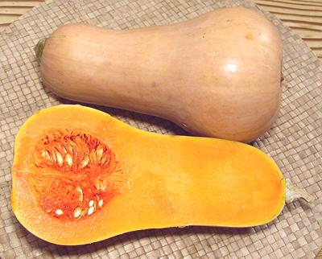

Butternut Squash

[Butternut Pumpkin (Australia / New Zealand); Batana (Sri Lanka);
Cucurbita moschata]
This medium size (2 to 5 pounds) bottle shaped winter squash
has very sweet orange flesh. The flavor is described as somewhat like
sweet potato, and it can substitute for sweet potato in recipes. It's
one of the most widely available squash in North America, appearing in
most produce markets and supermarkets all year.
More on Squash.
Buying:
Butternut squash is widely available at
supermarkets and vegetable stands throughout North America most of
the year. Select squash heavy for its size and without any soft spots
or bruises. The more orange the flesh, the riper it is.
Storing:
Do not refrigerate. They'll keep in a cool dry
place for a month or so. Once cut they should be refrigerated and used
within a few days.
Cooking:
As with most winter squash, the most common ways of
cooking are roasting and in soup, but butternut, due to its sweetness
and availability, is used in a larger range of recipes than other winter
squash, especially since it can substitute for sweet potato.
This squash is often simply split lengthwise, the seeds scooped
out, lightly oiled, and roasted in a 400°F/200°C oven, on
foil, cut side down, for about 45 minutes or until soft. It may also
be peeled, cut into chunks, tumbled with oil and perhaps spices, and
roasted 25 to 30 minutes, depending on the size of the chunks.
sq_butnutz* 071018 - www.clovegarden.com
©Andrew Grygus - agryg@aaxnet.com - Linking to and
non-commercial use of this page is permitted.